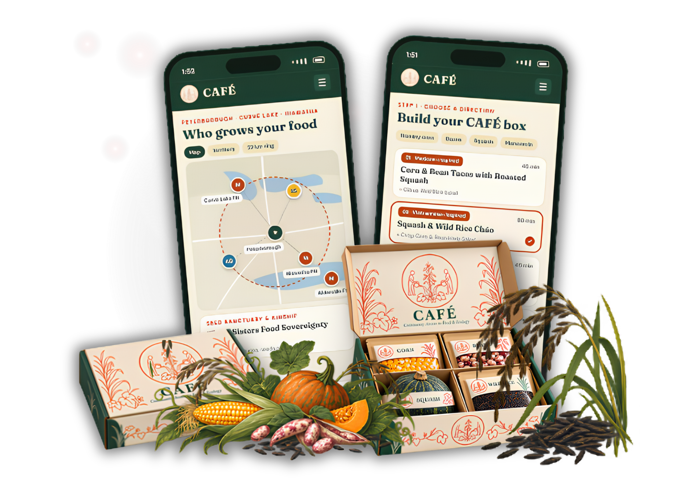
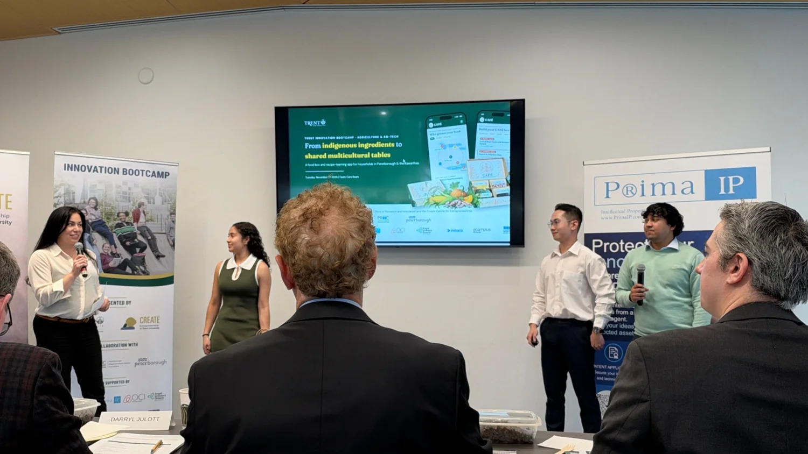
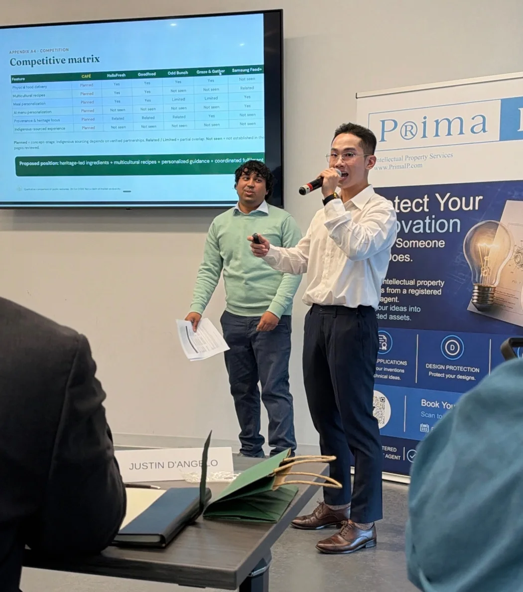
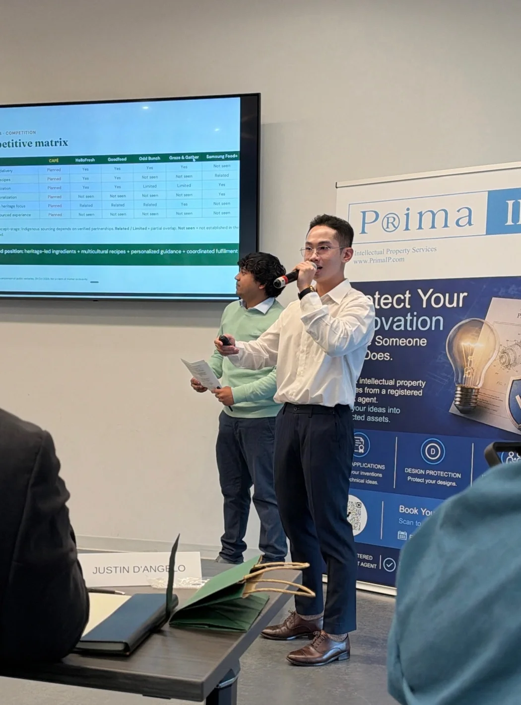

01 / The challenge & the insight
We couldn't solve the entire food system.
We found a role a startup could play.
The brief: more protein, fewer resources, greater uncertainty.
The challenge asked us to explore food production under resource pressure and unpredictable growing conditions. We considered the Three Sisters agricultural system — corn, beans and squash — alongside Mnoomin (wild rice) as the foundation for a locally relevant concept.
But a compelling agricultural idea does not automatically create a viable business. We needed to identify the customer behavior, delivery process and commercial incentive that could connect these ingredients to repeated household demand.
Rather than claim to invent a new protein source, build a practical bridge between local ingredients and the meals people already cook.
A customizable product, multicultural recipe discovery and a low-commitment preorder model gave us a testable demand-side hypothesis.
Research inputs that informed the opportunity
These are secondary-research signals used to frame a hypothesis. They are not results from CAFÉ customers, and should not be interpreted as proof of willingness to buy.
Mt. Pleasant, Ethnobiology Letters (2016)
Nutrients (2019), ages 65+
PwC Canada, Voice of the Consumer (2025)
02 / The solution we presented
Cook. Connect. Grow.
A simple box with a broader reason to return.
CAFÉ combined four ingredient staples — cornmeal, dry beans, whole squash and Mnoomin (wild rice) — with an app concept that makes unfamiliar cooking decisions easier.

A delivery path designed around demand.
The preorder model translates the idea into a sequence a four-person startup could test on a small scale.
- Customize & prepay
- Pool ingredient demand
- Purchase from growers & suppliers
- Portion & pack locally
- Deliver to pickup point
- Customer collects & cooks
03 / Business case built for the pitch
The numbers behind the decision.
I built a pricing, unit-cost and base-case forecast to test whether the proposed pilot could make economic sense. The figures below are planning assumptions, not revenue or profit achieved.
UNIT ECONOMICS · MODELLED, CAD
A margin to test, not a margin to claim.
The original cost model excluded transport and founder compensation; the result is therefore not a complete operating-profit estimate.
YEAR 1 · BASE CASE PROJECTION, CAD
Set a measurable starting hypothesis.
- Planned annual box volume
- 530
- Projected sales
- $24,380
- Illustrative modeled surplus
- $7,401
- Initial setup funding requested
- $2,500
The setup request is separate from sales. Forecast volumes, revenues and surplus were developed for the pitch; they are not recorded trading performance.
Validation logic
Scale would depend on evidence.
Prove first purchase
Run 10 paid preorders, validate ingredient sourcing and confirm a practical pickup process.
Test customer return
Target 140 cumulative orders, roughly 30% repeat purchase within 90 days, and at least 95% on-time, in-full fulfilment.
Expand only if viable
Evaluate 530 projected orders and a paid B2B pilot; defer wider expansion if repeat demand, margins or operations underperform.
04 / Outcome & evidence
2ND PLACE


